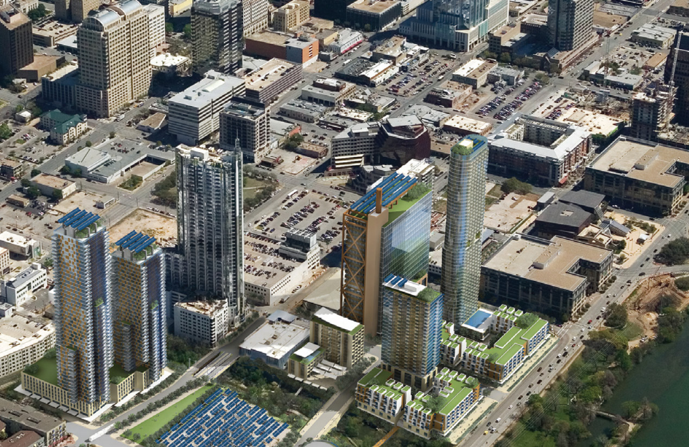

Designing for People
In a city, a Place is inhabited by people. Places include homes, shops, and parks. A Non-Place is not inhabited by people. Non-places include roads, warehouses, and empty space. A city of mostly Non-Places would hardly be a city. Why is it, then, that so much space in modern cities is dedicated to empty fields of pavement? Austin, Texas is almost half streets by area. After parking lots and other car-only spaces, Austin looks more like a city for cars than one for people.
When a city is designed for cars, it naturally sprawls out, making it only more necessary to design for cars. A human being in this environment must drive everywhere, and because nobody is walking, nobody makes an effort to appeal to passerby. What you get is an inefficient, alienating, ugly city.